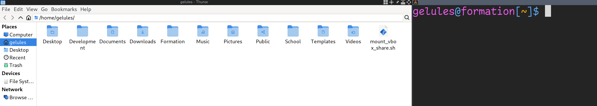
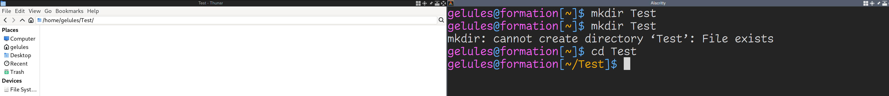
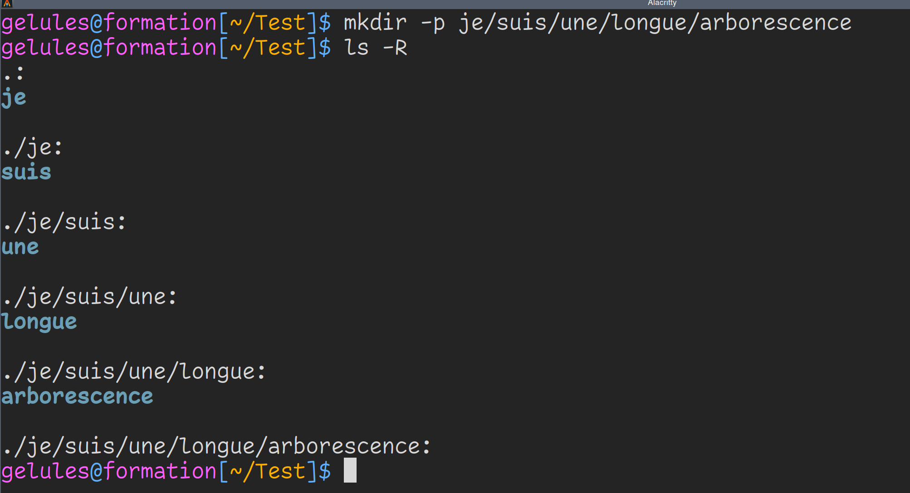

Introduction
Cet e-bouquin a pour objectif de préparer les étudiants à l'épreuve d'informatique communément appelée "Piscine", qu'importe l'école.
Il utilise des connaissances également présentes sur cette chaine Youtube
Je pars du fait que je peux te tutoyer et que ton épreuve demande d'apprendre le langage C sur un système UNIX (genre MacOS) ou UNIX-like (genre GNU/Linux).
Pour être sûr de n'oublier personne, je repars de zéro ici. J'assume que tu ne sais rien. Ne t'étonne pas si j'ai l'air de raconter des banalités, tout le monde n'a pas tes connaissances. J'ai l'habitude de prendre mes étudiants pour des cons. Ca fonctionne plutôt bien quant à leur apprentissage.
Le but de l'e-bouquin n'est pas te de rendre bon sur le champs, mais de t'aider à appréhender les notions difficiles qui t'attendent et d'avoir des outils pour les travailler. Tu gagneras en compétences dans le temps. Cependant, je présente un nombre de notions assez important.
Je ne peux pas présenter tous les exercices des piscines ; ce serait de la triche. Mais je peux présenter les exercices communs à chaque école, des tous petits exercices qui sont des classiques.
Je présente également des outils que j'utilise au quotidien (awesomewm, vim, ...), qui ne sont pas toujours présentés dans les piscines. Ca te servira à avoir des références en plus pour travailler efficacement.
Tu sortiras de ce cours avec plus qu'il n'en faut pour attaque la Piscine d'EPITA, Epitech, 42, ou une autre école qui a également repris le concept. Pour l'instant, seule l'école 2600 échappe à l'objectif de ce document, car elle a de l'assembleur dans son bootcampt d'entrée que je ne présente pas encore.
J'essaie d'être le plus simple et pratique possible. Pour les professionnels du métier, il y a des parties laissées de côté pour ne pas alourdir la compréhension des notions aux nouveaux étudiants. Je préfère mettre en avant l'exemple et la compréhension par la pratique avec des petits codes de test plutôt que des longs chapitres magistraux. Il manque également des parties pour compléter des notions, mais ce sont des notions que les étudiants aborderont pendant leur Piscine, elles ne sont pas réellement manquantes pour un Pédiluve.
Vous n'avez pas les bases
\[ chiffre * base ^{indice} \]
Avant d'attaquer la pratique, il faut revoir quelques préliminaires mathématiques.
En informatique, plusieurs bases sont utilisées pour travailler avec des données. Les bases 2, 16 et 8. Cette dernière est plus rarement utilisée et ne sera pas abordée dans ce cours. Mais avec les connaissances que tu auras en travaillant les bases 2 et 16, tu sauras travailler avec la base 8 simplement.
Avant de travailler les autres bases, tu vas revoir la base 10 que tu utilises tous les jours.
La base 10 possède 10 chiffres : 0, 1, 2, 3, 4, 5, 6, 7, 8 et 9.
La base 10 utilise les puissances de 10. Prends ce tableau en référence :
| Indice | 4 | 3 | 2 | 1 | 0 |
|---|---|---|---|---|---|
| Notation | \[ 10^4\] | \[ 10^3\] | \[ 10^2\] | \[ 10^1\] | \[ 10^0\] |
| Valeur | 10000 | 1000 | 100 | 10 | 1 |
Tu peux voir que \[ 10^3 = 1000\]
La base 10 ne fait que se multiplier par 10 pour passer à l'indice suivant.
Ce tableau est à utiliser pour décomposer n'importe quel nombre.
Prenons un nombre pris au hasard : 4269.
Pour décomposer ton nombre tu vas d'abord reporter le nombre sous le tableau en partant de la droite, ce qui donne :
| Indice | 4 | 3 | 2 | 1 | 0 |
|---|---|---|---|---|---|
| Notation | \[ 10^4\] | \[ 10^3\] | \[ 10^2\] | \[ 10^1\] | \[ 10^0\] |
| Valeur | 10000 | 1000 | 100 | 10 | 1 |
| Nombre | 4 | 2 | 6 | 9 |
Tu peux voir que 4 a comme indice 3, que 2 a comme indice 2, que 6 a comme indice 1 et que 9 a comme indice 0.
Décompose le nombre ainsi : \[ 4 * 10^3 + 2 * 10^2 + 6 * 10^1 + 9 * 10^0 \]
Calcule les puissances : \[ 4 * 1000 + 2 * 100 + 6 * 10 + 9 * 1 \]
Calcule les multiplications : \[ 4000 + 200 + 60 + 9 \]
Tu as décomposé ton nombre en utilisant la base 10.
Pourquoi tous ces efforts ?
Pour te préparer aux bases 2 et 16.
Franklin savait compter deux par deux
De la base 10 à la base 2
Maintenant que tu as compris comment décomposer un nombre en base 10, tu vas apprendre à transformer un nombre écrit en base 10 en base 2 et inversement.
Pour rappel, la base 2 a deux chiffres : 0 et 1.
Prends ce tableau en référence
| Indice | 10 | 9 | 8 | 7 | 6 | 5 | 4 | 3 | 2 | 1 | 0 |
|---|---|---|---|---|---|---|---|---|---|---|---|
| Notation | \[ 2^{10} \] | \[ 2^9\] | \[ 2^8\] | \[ 2^7\] | \[ 2^6\] | \[ 2^5\] | \[ 2^4\] | \[ 2^3\] | \[ 2^2\] | \[ 2^1\] | \[ 2^0\] |
| Valeur | 1024 | 512 | 256 | 128 | 64 | 32 | 16 | 8 | 4 | 2 | 1 |
La base 2 ne fait que se multiplier par 2 à chaque nouvel indice.
Le tableau va jusqu'à 1024 car c'est le strict minimum à connaître par coeur.
Prends un nombre, complètement au hasard : 651.
Tu vas le soustraire par la puissance de 2 inférieure ou égale la plus proche.
Reprends le tableau. La puissance de 2 inférieure ou égale la plus proche de 651 est... 512.
\[ 651 - 512 = 139\]
Tu as 1 fois 512 dans ton nombre de départ, reporte le chiffre 1 sous 512.
| Indice | 10 | 9 | 8 | 7 | 6 | 5 | 4 | 3 | 2 | 1 | 0 |
|---|---|---|---|---|---|---|---|---|---|---|---|
| Notation | \[ 2^{10} \] | \[ 2^9\] | \[ 2^8\] | \[ 2^7\] | \[ 2^6\] | \[ 2^5\] | \[ 2^4\] | \[ 2^3\] | \[ 2^2\] | \[ 2^1\] | \[ 2^0\] |
| Valeur | 1024 | 512 | 256 | 128 | 64 | 32 | 16 | 8 | 4 | 2 | 1 |
| Nombre | 1 |
Recommence avec le nouveau nombre qui est 139. La puissance de 2 inférieure ou égale la plus proche de 139 est... 128. Tu as 1 fois 128 dans ton nouveau nombre, reporte le chiffre 1 sous 128.
\[ 139 - 128 = 11 \]
| Indice | 10 | 9 | 8 | 7 | 6 | 5 | 4 | 3 | 2 | 1 | 0 |
|---|---|---|---|---|---|---|---|---|---|---|---|
| Notation | \[ 2^{10} \] | \[ 2^9\] | \[ 2^8\] | \[ 2^7\] | \[ 2^6\] | \[ 2^5\] | \[ 2^4\] | \[ 2^3\] | \[ 2^2\] | \[ 2^1\] | \[ 2^0\] |
| Valeur | 1024 | 512 | 256 | 128 | 64 | 32 | 16 | 8 | 4 | 2 | 1 |
| Nombre | 1 | 1 |
Recommence avec le nouveau nombre qui est 11. La puissance de 2 inférieure ou égale la plus proche de 11 est... 8. Tu as 1 fois 8 dans ton nouveau nombre, reporte le chiffre 1 sous 8.
\[ 11 - 8 = 3 \]
| Indice | 10 | 9 | 8 | 7 | 6 | 5 | 4 | 3 | 2 | 1 | 0 |
|---|---|---|---|---|---|---|---|---|---|---|---|
| Notation | \[ 2^{10} \] | \[ 2^9\] | \[ 2^8\] | \[ 2^7\] | \[ 2^6\] | \[ 2^5\] | \[ 2^4\] | \[ 2^3\] | \[ 2^2\] | \[ 2^1\] | \[ 2^0\] |
| Valeur | 1024 | 512 | 256 | 128 | 64 | 32 | 16 | 8 | 4 | 2 | 1 |
| Nombre | 1 | 1 | 1 |
Recommence avec le nouveau nombre qui est 3. La puissance de 2 inférieure ou égale la plus proche de 3 est... 2. Tu as 1 fois 2 dans ton nouveau nombre, reporte le chiffre 1 sous 2.
\[ 3 - 2 = 1 \]
| Indice | 10 | 9 | 8 | 7 | 6 | 5 | 4 | 3 | 2 | 1 | 0 |
|---|---|---|---|---|---|---|---|---|---|---|---|
| Notation | \[ 2^{10} \] | \[ 2^9\] | \[ 2^8\] | \[ 2^7\] | \[ 2^6\] | \[ 2^5\] | \[ 2^4\] | \[ 2^3\] | \[ 2^2\] | \[ 2^1\] | \[ 2^0\] |
| Valeur | 1024 | 512 | 256 | 128 | 64 | 32 | 16 | 8 | 4 | 2 | 1 |
| Nombre | 1 | 1 | 1 | 1 |
Recommence avec le nouveau nombre qui est 1. La puissance de 2 inférieure ou égale la plus proche de 1 est... 1. Tu as 1 fois 1 dans ton nouveau nombre, reporte le chiffre 1 sous 1.
\[ 1 - 1 = 0 \]
| Indice | 10 | 9 | 8 | 7 | 6 | 5 | 4 | 3 | 2 | 1 | 0 |
|---|---|---|---|---|---|---|---|---|---|---|---|
| Notation | \[ 2^{10} \] | \[ 2^9\] | \[ 2^8\] | \[ 2^7\] | \[ 2^6\] | \[ 2^5\] | \[ 2^4\] | \[ 2^3\] | \[ 2^2\] | \[ 2^1\] | \[ 2^0\] |
| Valeur | 1024 | 512 | 256 | 128 | 64 | 32 | 16 | 8 | 4 | 2 | 1 |
| Nombre | 1 | 1 | 1 | 1 | 1 |
Il te reste 0, tu as terminé. Reprends le tableau et ajoute 0 aux cases où tu n'as pas écrit 1.
| Indice | 10 | 9 | 8 | 7 | 6 | 5 | 4 | 3 | 2 | 1 | 0 |
|---|---|---|---|---|---|---|---|---|---|---|---|
| Notation | \[ 2^{10} \] | \[ 2^9\] | \[ 2^8\] | \[ 2^7\] | \[ 2^6\] | \[ 2^5\] | \[ 2^4\] | \[ 2^3\] | \[ 2^2\] | \[ 2^1\] | \[ 2^0\] |
| Valeur | 1024 | 512 | 256 | 128 | 64 | 32 | 16 | 8 | 4 | 2 | 1 |
| Nombre | 1 | 0 | 1 | 0 | 0 | 0 | 1 | 0 | 1 | 1 |
Ce sont les puissances de 2 que tu n'as pu soustraire à chaque nombre que tu avais.
Tu peux donc dire que 651 en base 10 s'écrit 1010001011 en base 2.
De la base 2 à la base 10
Tu vas maintenant faire l'inverse, passer de la base 2 à la base 10. Toujours avec le tableau. Tu vas voir ça va être encore plus rapide.
Prenons un nombre en base 2 complètement au hasard : 1010011010.
Tu vas inscrire ce nombre dans le tableau le plus à droite possible.
| Indice | 10 | 9 | 8 | 7 | 6 | 5 | 4 | 3 | 2 | 1 | 0 |
|---|---|---|---|---|---|---|---|---|---|---|---|
| Notation | \[ 2^{10} \] | \[ 2^9\] | \[ 2^8\] | \[ 2^7\] | \[ 2^6\] | \[ 2^5\] | \[ 2^4\] | \[ 2^3\] | \[ 2^2\] | \[ 2^1\] | \[ 2^0\] |
| Valeur | 1024 | 512 | 256 | 128 | 64 | 32 | 16 | 8 | 4 | 2 | 1 |
| Nombre | 1 | 0 | 1 | 0 | 0 | 1 | 1 | 0 | 1 | 0 |
Maintenant, tu n'as qu'à reprendre les puissances de 2 avec un 1 en dessous et les sommer ensemble.
\[ 512 + 128 + 16 + 8 + 2 = 666 \]
Dans le cas de grands nombres
Si tu dois passer de la base 10 à la base 2 mais avec un nombre plus grand que le tableau, il existe une technique pour généraliser la transformation.
Prenons un nombre vraiment plus grand que 1024 : 6789.
Tu vas diviser par 2 ton nombre et garder à chaque fois le reste de côté. Rappelle toi de tes cours de primaire, c'est une opération euclidienne.
L'opération mathématique pour avoir le reste est %.
Ainsi si j'écris \[ x \% 2 = 0 \] c'est qu'il reste 0 à la division x / 2. Tu peux aussi dire que x est pair.
Et si j'écris \[ x \% 2 = 1 \] c'est qu'il reste 1 à la division x / 2. Tu peux aussi dire que x est impair.
Tu vas faire apparaître le résultat petit à petit avec cet affichage :
Résultat =
Il se remplira à chaque itération de tes calculs en y inscrivant le reste que tu viens de calculer sur la gauche.
\[ 6789 / 2 = 3394 \] \[ 6789 \% 2 = 1 \] Résultat = 1
\[ 3394 / 2 = 1697 \] \[ 3394 \% 2 = 0 \] Résultat = 01
\[ 1697 / 2 = 848 \] \[ 1697 \% 2 = 1 \] Résultat = 101
\[ 848 / 2 = 424 \] \[ 848 \% 2 = 0 \] Résultat = 0101
\[ 424 / 2 = 212 \] \[ 424 \% 2 = 0 \] Résultat = 00101
\[ 212 / 2 = 106 \] \[ 212 \% 2 = 0 \] Résultat = 000101
\[ 106 / 2 = 53 \] \[ 106 \% 2 = 0 \] Résultat = 0000101
\[ 53 / 2 = 26 \] \[ 53 \% 2 = 1 \] Résultat = 10000101
\[ 26 / 2 = 13 \] \[ 26 \% 2 = 0 \] Résultat = 010000101
\[ 13 / 2 = 6 \] \[ 13 \% 2 = 1 \] Résultat = 1010000101
\[ 6 / 2 = 3 \] \[ 6 \% 2 = 0 \] Résultat = 01010000101
\[ 3 / 2 = 1 \] \[ 3 \% 2 = 1 \] Résultat = 101010000101
\[ 1 / 2 = 0 \] \[ 1 \% 2 = 1 \] Résultat = 0101010000101
Ta dernière division donne 0. Tu as terminé.
Tu sais maintenant que 6789 s'écrit 0101010000101 en base 2.
C'est exact
La notation en base 16 est appellée héxadécimale.
Les plus avertis se demanderont comment écrire un nombre dans une base plus grande que 10. La base 2 utilise 0 et 1, la base 10 va de 0 et 9... mais qu'utiliser quand on va au delà de 9 ?
Les lettres de l'alphabet !
Ainsi la base 16 va de 0 à F. Voici les chiffres de la base 16 : 0, 1, 2, 3, 4, 5, 6, 7, 8, 9, A, B, C, D, E et F.
Voici un tableau de référence :
| Base 2 | Base 10 | Base 16 |
|---|---|---|
| 0 | 0 | 0 |
| 1 | 1 | 1 |
| 10 | 2 | 2 |
| 11 | 3 | 3 |
| 100 | 4 | 4 |
| 101 | 5 | 5 |
| 110 | 6 | 6 |
| 111 | 7 | 7 |
| 1000 | 8 | 8 |
| 1001 | 9 | 9 |
| 1010 | 10 | A |
| 1011 | 11 | B |
| 1100 | 12 | C |
| 1101 | 13 | D |
| 1110 | 14 | E |
| 1111 | 15 | F |
| 10000 | 16 | 10 |
| 10001 | 17 | 11 |
| 10010 | 18 | 12 |
| 10011 | 29 | 13 |
| 10100 | 20 | 14 |
| 10101 | 21 | 15 |
| 10110 | 22 | 16 |
| 10111 | 23 | 17 |
| 11000 | 24 | 18 |
| 11001 | 25 | 19 |
| 11010 | 26 | 1A |
| 11011 | 27 | 1B |
| 11100 | 28 | 1C |
| 11101 | 29 | 1D |
| 11110 | 30 | 1E |
| 11111 | 31 | 1F |
| 100000 | 32 | 20 |
On dira ainsi qu'en base 16, A est un chiffre et le nombre 10 vaut 16 en base 10.
Tu peux réutiliser les notions vues en base 2 pour la base 16 pour passer de l'un à l'autre. Pas besoin d'alourdir le cours avec des calculs supplémentaires.
Voici quelques valeurs à connaître par coeur.
| Base 2 | Base 10 | Base 16 |
|---|---|---|
| 1010 | 10 | A |
| 1111 | 15 | F |
| 10000 | 16 | 10 |
| 11000 | 24 | 18 |
| 100000 | 32 | 20 |
| 110000 | 48 | 30 |
| 1000000 | 64 | 40 |
| 10000000 | 128 | 80 |
| 11111111 | 255 | FF |
| 100000000 | 256 | 100 |
| 10000000000 | 1024 | 400 |
Bit et octet
Bit
Le bit est la quantité minimale d'information utilisable en informatique. Elle n'a que deux valeurs : 0 et 1.
Si tu as mille bits, tu as un kilobit, que tu peux écrire avec un petit 'b' : 1 kb.
Si tu as un million de bits, tu écris un mégabit ou 1 Mb.
Si tu as un milliard de bits, tu écris un gigabit ou 1 Gb.
Octet
L'octet est composé de 8 bits. Sa traduction en Anglais est le byte.
Tu peux utiliser la même notation qu'avec le bit mais en utilisant un 'o' minuscule ou un 'B' majuscule en Anglais.
Si tu as mille octets, tu as un kilooctet ou un kilobyte, que tu peux écrire 1 ko ou 1 kB.
Si tu as un million d'octets, tu écris un mégaoctet ou 1 megabyte, que tu peux écrire 1 Mo ou 1 MB.
Si tu as un milliard d'octets, tu écris un gigaoctet ou 1 gigabyte, que tu peux écrire 1 Go ou 1 GB.
Portes logiques
Enfant, tu as appris les opérations mathématiques élémentaires : l'addition, la soustraction, la multiplication et la division.
En informatique, il existe d'autres opérations élémentaires qu'on appelle des portes logiques.
Tu vas appliquer ces portes logiques sur des bits, c'est à dire 0 et 1. Tu peux remplacer 0 par Faux et 1 par Vrai comme valeurs logiques.
NOT
La porte NOT est un inverseur. Elle prend une entrée et une sortie. Son rôle est d'inverser la valeur en entrée.
| Entrée | Sortie |
|---|---|
| 0 | 1 |
| 1 | 0 |
AND
La porte AND a deux entrées. Pour que le signal de sortie soit Vrai, il faut que les deux signaux aux entrées le soient également.
| Entrée 1 | Entrée 2 | Sortie |
|---|---|---|
| 0 | 0 | 0 |
| 0 | 1 | 0 |
| 1 | 0 | 0 |
| 1 | 1 | 1 |
Si tu as besoin d'une phrase logique pour mieux comprendre, imagine que tu fais des courses pour faire un gâteau (miam). Dans une ville, il existe deux magasins, un spécialisé en lait et l'autre en farine.
Il faut que les deux magasins possèdent les bons produits pour que tu puisses faire ton gâteau.
OR
La porte OR a deux entrées. Pour que le signal de sortie soit Vrai, il faut qu'au moins une des entrées soit à Vrai.
| Entrée 1 | Entrée 2 | Sortie |
|---|---|---|
| 0 | 0 | 0 |
| 0 | 1 | 1 |
| 1 | 0 | 1 |
| 1 | 1 | 1 |
Si tu as besoin d'une phrase logique pour mieux comprendre, imagine que tu fais des courses pour acheter un gâteau (c'est plus rapide que de le préparer). Dans une ville, il existe deux magasins spécialisés en gâteaux.
Il faut qu'au moins un des deux magasins soit ouvert pour que tu puisses avoir ton gâteau.
XOR
La porte XOR est un eXclusive OR, ou un OU eXclusif. Elle agit comme la porte OR à condition d'avoir une exclusivité en entrée.
| Entrée 1 | Entrée 2 | Sortie |
|---|---|---|
| 0 | 0 | 0 |
| 0 | 1 | 1 |
| 1 | 0 | 1 |
| 1 | 1 | 0 |
Si tu as besoin d'une phrase logique pour mieux comprendre, imagine que tu fais des courses pour le dernier disque de musique de ton artiste préféré. Dans une ville, il existe deux magasins spécialisés en musique.
Il faut qu'au moins un des deux magasins possède les droits exclusifs de vente pour qu'il existe une exclusivité. Si les deux magasins possèdent les droits de vente, alors il n'y a pas d'exclusivité.
Autres portes
Il existe d'autres portes logiques qui ne sont pas présentées ici. Elles ne te seront pas utilises pour valider la piscine, mais elles pourraient l'êtres plus tard. Je te laisse voir la page Wikipédia à leur sujet.
Choix du système
Le choix du système n'est pas déterminant pour une piscine. Je conseille Ubuntu qui est la distribution Linux désignée pour les novices. Cependant, je présente également d'autres distributions qui ont leurs avantages et inconvénients. Les pages qui suivent ont un lien pour télécharger la distribution et une vidéo pour l'installer et la configurer.
Si tu es débutant complet, préfère Ubuntu. Les paquets (programmes) ne seront pas toujours à jour, mais c'est une distribution d'une stabilité sans précédent quand on ne sait pas mettre à jour ses paquets.
Si tu veux une distribution Linux toujours à jour et simple d'installation, préfère Manjaro ou Fedora.
Si tu veux une distribution Linux toujours à jour et à installer à la main, préfère Arch Linux.
Si tu veux une distribution qui isole tes paquets, qui t'assure une stabilité, mais qui est bien plus compliquée à prendre en main quand on n'a pas l'habitude, préfère NixOS.
Ubuntu
ISO : https://www.ubuntu-fr.org/download
Arch Linux
ISO : https://archlinux.org/download/
Manjaro
ISO : https://manjaro.org/products/download/x86
Fedora
ISO : https://fedoraproject.org/fr/workstation/download
NixOS
ISO : https://nixos.org/download
Shell
Le Shell est un langage de programmation qui te permet de dialoguer avec ton système d'exploitation. Tu donnes des commandes à effectuer, et le système exécutera tes ordres.
Le terminal graphique est ce qu'on appelle un émulateur de terminal, celui-ci va appeler un interpréteur shell (sh, bash, zsh, dash, ...) qui interprétera tes commandes.
Tous les interpréteurs comprennent le Shell, mais certains ont des extensions qui te permettent une meilleure interactivité, avec de l'autocomplétion plus intelligente, une correction des fautes, une plus grande souplesse d'utilisation, etc.
J'utilise zsh, mais tout ce que je vais présenter est valide avec d'autres interpréteurs.
Les prochains chapitres t'apprendront à utiliser ton terminal.
Utilisation
Une fois sur ton shell, voici ce qui se présente à toi.
username@hostname:~$
Décortiquons tout ça.
username est ton nom d'utiisateur.
Le arobase '@' veut dire que tu es connecté sur une machine.
hostname est le nom de cette machine.
Le deux-points ':' est un simple séparateur pour la suite de la ligne.
Le tilde '~' signifie que tu te trouves dans ton HOME. C'est ton répertoire personnel avec tes fichiers personnels.
Le dollar '$' signifie que toutes les commandes que tu rentres sont exécutées comme simple utilisateur.
Si tu avais un signe dièse '#' à la place, ça signifierait que les commandes seront exécutées en tant que root (admin).
Pour simplifier la lecture des codes que je vais présenter, mon shell sera présenté ainsi :
$
Pour essayer, entre la commande pwd, et vois la différence de résultat avec la mienne.
$ pwd
/home/gelules
$
La commande pwd te dit où te trouves. C'est ton Path Working Directory.
Shutdown et reboot
Si tu veux arrêter ta machine, exécute la commande
$ shutdown now
Si tu veux rebooter ta machine, exécute la commande
$ reboot
Se déplacer
Introduction
Maintenant que tu sais lire ce que t'affiche ton shell par défaut, tu vas apprendre quelques manoeuvres de base.
Pour comprendre ce qu'il se passe, je te conseille d'ouvrir ton explorateur graphique (le programme qui te permet de voir tes documents graphiquement) d'un côté et ton shell de l'autre côté. Ca te permettra de faire le lien entre ce que tu tapes et ce qu'il se passe dans ton système à chaque commande.
Ton explorateur graphique ne ressemblera peut-être pas au mien qui est Thunar. Et j'aurai probablement à certains endroits des fichiers que tu n'as pas. Ce n'est pas grave.
Dans tous les cas tu verras des dossiers et des fichiers et tu devras double-cliquer pour te déplacer. Qui a dit que Windows avait l'exclusivité du clique ?
Je te conseille de faire les mêmes commandes que moi, pour que ça rentre ! Ne fais pas que lire. L'apprentissage vient surtout par la pratique, même si c'est jouer au miroir.

Tu vois que dans mon exemple, mon shell se trouve dans mon HOME et Thunar aussi. La différence c'est que Thunar me liste directement tous mes fichiers.
Lister un répertoire
Pour lister ton répertoire courant, utilises la commande ls.
$ ls
Desktop Development Documents Downloads Formation mount_vbox_share.sh Music Pictures Public School Templates Videos
$
Tu peux donner un ou plusieurs noms de fichiers et répertoires à ls pour lister leurs contenus.
Depuis ton HOME, exécute
ls Desktop Documents Downloads
Si ces répertoires n'existent pas chez toi, attends de savoir en créer pour tester ls avec des noms de fichiers et répertoires donnés en paramètres.
Créer un répertoire
Pour créer un répertoire, utilise la commande mkdir.
mkdir Test

Comme tu peux le voir, mon explorateur de fichiers s'est actualisé pour afficher le nouveau répertoire. Utilise la commande ls dans ton terminal pour valider que ton terminal le voit également.
Sache que tu peux créer plusieurs répertoires d'un coup en les donnant à ls.
$ mkdir Je suis un seul appel a mkdir
# Cache-cache
Il y a une dernière chose dont je ne t'ai pas parlé. Les fichiers cachés.
Les commandes shell ont pour habitude de ne rien afficher si tout se passe bien. En cas d'erreur, un message s'affichera. Lis toujours tes messages, il ne faut pas avoir peur. C'est justement une aide pour comprendre ce qu'il se passe.

Ici, j'ai voulu créer le répertoire Test alors qu'il existe déjà.
Se déplacer dans un répertoire
Pour te déplacer dans un répertoire graphiquement, c'est facile, tu doubles-cliques dessus.
Pour te déplacer dans un répertoire en terminal, c'est facile, tu utilises la commande cd.
$ cd Test
Déplace toi dans le répertoire Test.

Ton shell affiche maintenant ~/Test. Ca veut dire qu'il se situe dans le répertoire Test lui-même situé dans ton HOME.
Tu peux créer une arborescence complète en donnant le paramètre -p à mkdir.
$ mkdir -p je/suis/une/longue/arborescence
$

Créer des fichiers
Tu ne vas pas encore voir comment éditer des fichiers. Tu vas commencer par créer des fichiers vides.
Pour se faire, utilise la commande touch.
$ touch je_suis_un_fichier
$ ls
Listing long format
Jusqu'ici tu as dû voir les différences entre fichier et répertoire aux couleurs affichées sur le terminal avec ls. Cette coloration est dûe à une configuration de ls.
Dans mon cas, si j'exécuter which ls pour en savoir plus sur la commande ls, j'ai ceci :
$ which ls
ls: aliased to ls --color=auto
$
Ca veut dire que ls utilise par défaut le paramètre --color=auto qui colore les noms des fichiers et répertoires dans ton terminal.
Exécute maintenant ceci, je fais exprès de cacher certains informations pour te forcer à exécuter les commandes :
$ ls
$ mkdir repertoire
$ touch fichier
$ /bin/ls
repertoire fichier
$
Tu vois maintenant que tout s'affiche en blanc. Ce que tu as fait, c'est exécuter le programme ls directement depuis là où il est installé, sans la configuration de coloration automatique de ton shell.
Imagine tomber un jour sur une distribution Linux qui n'affiche pas les couleurs par défaut, comment savoir si ce que tu listes et un fichier ou un répertoire ?
Tu vas utiliser le paramètre -l à ls pour afficher le long listing format, pour afficher plein d'informations sur le répertoire où tu te trouves.
Exécute
$ ls -l
total 0
-rw-r--r-- 1 gelules wheel 0 Jul 20 18:56 fichier
drwxr-xr-x 2 gelules wheel 40 Jul 20 18:55 repertoire
La première ligne indique combien de place sur le disque prend ce que tu listes. Pour l'instant c'est 0 car c'est vide.
Mainenant, pour chaque ligne, regarder le tout premier caractère. Si c'est un tirer '-', c'est que tu listes un fichier, si c'est un 'd' minuscule, c'est que c'est un répertoire.
Tu apprendras le reste des informations listées dans un prochain chapitre.
Lister récursivement
Pour atteindre graphiquement la fin de l'arborescence, ça demande quelques clics. Alors que pour le shell, il suffit de donner le paramètre -R à ls pour lui demander de lister récursivement les répertoires.

Pour information, le '.' situé au début de chaque résultat représente ton dossier courant (le working directory). Ca veut dire que si tu fais la commande
$ cd .
Tu te déplaceras... où tu te trouves.
J'ai un exemple pratique qui sera présenté plus tard.
Supprimer des fichiers et répertoires
Pour supprimer des répertoires, il existe deux commandes. *rmdir et rm.
rmdir va supprimer un répertoire vide et rm avec les bons paramètres va supprimer un répertoire et toute son arborescence récursivement.
Essaie le commandes suivantes, je n'affiche pas le résultat pour te forcer à visualiser par toi-même ce qu'il se passe.
$ ls
je je_suis_un_fichier
$ rmdir je_suis_un_fichier
??? # Mais diantre, que se passe t-il ?
$ rm je_suis_un_fichier
$ ls
je
$ ls -R
.:
je
./je:
suis
./je/suis:
une
./je/suis/une:
longue
./je/suis/une/longue:
arborescence
./je/suis/une/longue/arborescence:
$ rmdir je
??? # Mais diantre, que se passe t-il ?
$ rmdir je/suis/une/longue/arborescence
$ ls -R
???
$ rm -r je
$ ls -R
$
Tu l'as compris, le paramètre -r de rm supprime toute une arborescence.
rm peut aussi être utilisé pour supprimer des fichiers, mais nous n'avons pas encore vu ce cas.
Tu peux également donner plusieurs répertoires à rmdir et rm pour en supprimer plusieurs. Attention, rm doit toujours avoir son paramètre -r si tu supprimes des répertoires. Dans le cas de fichiers, tu n'as pas besoin de l'utiliser.
$ rmdir Je suis un seul appel a mkdir
ou
$ rm -r Je suis un seul appel a mkdir
Copier des fichiers et répertoires
Pour copier des fichiers et des répertoires, tu peux utiliser la commande cp.
$ ls
$ touch fichier_1
$ cp fichier_1 fichier_2
$ mkdir repertoire_1
$ cp fichier_1 fichier_2 repertoire_1
$ cp -r repertoire_1 repertoire_2
$ ls
fichier_1 fichier_2 repertoire_1 repertoire_2
$ ls repertoire_1 repertoire_2
repertoire_1:
fichier_1 fichier_2
repertoire_2:
fichier_1 fichier_2
$ mkdir repertoire_3
$ cp -r repertoire_1 repertoire_2 repertoire_3
$ ls repertoire_3
repertoire_1 repertoire_2
$
Comme tu peux le constater, si tu veux copier un répertoire, il faut le faire récursivement avec l'option -r.
Renommer des fichiers et répertoires
Pour renommer ou déplacer un répertoire ou un fichier, utilise la commande mv, pour MoVe.
$ touch gato
$ ls
gato
$ mv gato gateau
$ ls
gateau
$ mkdir ventre
$ mv gateau ventre
$ ls
ventre
$ ls ventre
gateau
$
En réalité quand tu renommes un fichier, tu le déplaces dans le même répertoire avec un nouveau nom.
cd en arrière
Tu sais avancer dans des répertoires, mais comment revenir en arrière ?
Il faut donner .. à cd pour revenir en arrière. Chaque .. part en arrière d'un niveau.
Un exemple sera plus parlant.
$ mkdir -p toto/titi/tutu
$ cd toto/titi/tutu
$ cd ..
$ ls
tutu
$ cd ../..
$ ls
toto
$
Retourner au dernier répertoire visité avec cd
Si tu veux basculer vers le dernier répertoire visité, donne - en paramètre à cd.
Je te laisse faire les commandes pour apprécier, j'ai caché exprès les parties intéressantes.
$ mkdir -p je/suis/un/humain tu/es/un/gateau
$ cd je/suis/un/humain
$ cd ../../../tu/es/un/gateau
$ pwd
???
$ cd -
$ pwd
???
$ cd -
$ pwd
???
$
Retourner dans le HOME avec cd
Si tu veux retourner rapidement dans ton HOME, tu peux le faire en appellant simplement cd sans paramètre.
Je te laisse faire les commandes pour apprécier, j'ai caché exprès les parties intéressantes.
$ cd je/suis/un/humain
$ pwd
???
$ cd
$ pwd
???
$
Cas particuliers
Crée le répertoire canare et cd y toi dedans.
~ $ mkdir canare
~ $ cd canare
~/canare $
Tu te rends compte que tu as fait une faute de frappe.
Renomme le répertoire dans lequel tu te trouves ainsi :
~/canare $ mv ../canare ../canard
~/canare $
Horreur et damnation, ton shell affiche encore canare. Il faut que tu exécutes cd . pour que ton shell se mette à jour.
~/canare $ cd .
~/canard $
Maintenant plus drôle. Tu vas créer ce qu'on appelle un undefined behavior ou comportement indéfini.
Voici quelques commandes :
$ mkdir toto
$ cd toto
$ rmdir ../toto
$ cd .
$ pwd
Que se passe t-il ? Tout dépend de ton shell, certains feront avec à leur manière, d'autres afficheront une erreur. C'est un comportement indéfini, le langage shell n'a pas défini quoi faire dans ce cas, chaque interpréteur a un comportement différent.
Le système de fichier
Tu l'as peut-être vu en exécutant la commande pwd, ton chemin commence toujours par un slash '/'.
Ton HOME se trouve dans un autre répertoire appelé home qui se trouve lui-même dans un répertoire nommé / (slash).
Exécute la commande ls / pour voir ce qui se trouve à la racine de ton système de fichier (filesystem).
$ ls /
bin boot dev etc home lib lib64 lost+found media mnt opt proc root run sbin srv sys tmp usr var
Tu n'as peut-être pas exactement le même résultat. Ce n'est pas grave. Tu devrais quand même y voir des similarités.
Pour les utilisateurs Windows, le répertoire racine est un peu équivalent au disque C qui contient tous les répertoires de configuration. C'est faux sur beaucoup d'aspects techniques que tu n'as pas encore besoin de connaître. Je veux juste que tu saches qu'il existe un répertoire racine depuis lequel tu peux te déplacer et lister ce qu'il s'y trouve.
Si jamais tu dois faire des tests temporaires, je te renvoie au répertoire /tmp qui est, dans beaucoup de distributions Linux, remis à zéro à chaque démarrage. Il peut être configuré pour être remis à zéro tous les jours, semaines, mois...
$ cd /tmp
$ touch je_vais_disparaitre
$ ls
je_vais_disparaitre
$ reboot
...
$ cd /tmp
$ ls
Cache-cache
Il y a une dernière chose dont je ne t'ai pas parlé. Les fichiers cachés.
Je vais exprès de cacher certains informations pour te forcer à pratiquer.
Exécute ces commandes depuis ton HOME :
$ mkdir Test
$ cd Test
$ touch .cache affiche
$ ls
???
$
Où est le fichier .cache ? Il est caché. Les fichiers et répertoires dont le nom commencent par un point '.' ne sont pas affichés, car il s'agit en général de fichier de configuration personnelle pour tes programmes et c'est plus élégant de ne pas toujours les afficher.
Si tu veux les afficher, exécute :
$ ls -a
. .. .cache affiche
Mais que sont '.' et '..' ? Rappelle toi, le '.' représente le répertoire dans lequel tu te trouves et '..' représente le répertoire parent.
Si tu veux afficher tout ce qui est caché sauf '.' et '..', exécute :
$ ls -A
.cache affiche
Je te laisse maintenant exécuter cette dernière commande dans ton HOME. Tu verras que même ton explorateur graphique ne t'affiche pas tout par défaut (mais c'est configurable).

RTFM : Read The Fucking Manual
Pour en apprendre d'avantages quant aux commandes que tu ne maitrises pas, il
faut que tu fasses confiance à ton meilleur ami : Google le manuel.
Pour l'invoquer, utilise la commande man.
$ man ls
Le manuel s'affiche. Pour t'y déplacer, utilise les touches fléchées. Pour le quitter, appuie sur q.
Chaque commande a son manuel, mais aussi certaines notions de Linux.
Par exemple, si tu veux en apprendre plus sur ton système de fichier, exécute la commande
$ man hier
hier pour hierarchy.
Et si tu veux apprendre à utiliser le manuel, alors consulte le manuel du manuel.
$ man man
Chose intéressante dedans, les sections.
The table below shows the section numbers of the manual followed by the types of pages they contain.
1 Executable programs or shell commands
2 System calls (functions provided by the kernel)
3 Library calls (functions within program libraries)
4 Special files (usually found in /dev)
5 File formats and conventions, e.g. /etc/passwd
6 Games
7 Miscellaneous (including macro packages and conventions), e.g. man(7), groff(7), man-pages(7)
8 System administration commands (usually only for root)
9 Kernel routines [Non standard]
Pour ta picine, les 3 premières sections seront à consulter.
La 1ere contient celle des binaires (des programmes) que tu utilises depuis ton shell.
La 2eme et la 3eme contiennet des fonctions que tu peux appeler quand tu fais du langage C. La 2eme est celle des fonctions que ton Kernel te propose, la 3eme sont les fonctions de la libc (bibliothèque C).
Un exemple. Si tu veux afficher le manuel de la fonction C printf (tu ne sais peut-être pas encore ce que c'est, ce n'est pas grave), tu serais tenté d'exécuter.
$ man printf
Si tu le fais, tu verras en haut à gauche printf(1), le '1' entre parenthèses signifie que tu es dans la 1ère section du manuel. Ce que tu veux c'est la 3ème, pour les appels de la bibliothèque C (library calls).
Il faut alors utiliser une de ces deux notations :
$ man 3 printf
$ man printf.3
A partir de maintenant, pour toutes les commandes que tu as vues et verras, je t'invite très fortement à lire le manuel à chaque fois.
Lire et écrire dans des fichiers
Tu as vu comment créer des fichiers vides, mais tu n'as pas encore vu comment écrire dedans et les lire à la ligne de commande.
Ecrire dans un fichier
Pour écrire dans un fichier, tu peux utiliser l'éditeur de texte nano qui se veut extrêmement simple d'utilisation et surtout s'exécute dans le terminal.
Mettons que tu sois dans ton HOME, nous allons faire les tests d'écriture et lecture dans le répertoire Test.
$ mkdir Test
$ cd Test
Tu peux appeler nano sans nom de fichier derrière, tu pourras donner un nom après.
$ nano
GNU nano 8.1 New Buffer
[ Welcome to nano. For basic help, type Ctrl+G. ]
^G Help ^O Write Out ^F Where Is ^K Cut ^T Execute ^C Location M-U Undo M-A Set Mark
^X Exit ^R Read File ^\ Replace ^U Paste ^J Justify ^/ Go To Line M-E Redo M-6 Copy
Tu peux directement écrire ton texte et te déplacer dans le fichier avec les touches fléchées.
Tu peux voir en bas des commandes notées avec un circonflexe '^'. C'est un alias pour la touche ctrl. Si tu veux sauvegarder ton fichier, appuie sur ctrl+o pour Write Out.
Après cette combinaison, nano te demande le nom du fichier avec cette ligne affichée en bas à gauche :
File Name to Write:
Donne un nom de fichier. Tu peux même mettre un chemin entier pour le sauvegarder ailleurs. Appelle ton fichier fichier_test.
Si tu veux quitter nano, exécute ctrl+x. Si tu as modifié ton fichier entretemps, il te demandera si tu veux sauvegarder avant de quitter.
De retour sur le shell, tu peux rouvrir ton fichier avec nano en lui donnant son nom en paramètre.
$ nano fichier_test
Lire un fichier
Pour lire un fichier, tu peux utiliser la redirection gauche '<' en mettant le nom de ton fichier.
$ fichier_test
# Contenu du fichier
$
Tu peux aussi utiliser la commande cat
$ cat fichier_test
# Contenu du fichier
$
cat te sera très utile pour vérifier que tes fichiers respectent une partie de la norme. La norme en piscine est le style de code (la coding style) à suivre pour que tes fichiers soient considérés comme valides.
Rouvre ton fichier avec nano et ajoute des espaces à la fin d'une ou plusieurs lignes de texte. Exécute maintenant
$ cat -e fichier_test
# Contenu du fichier avec des '$' en fin de ligne
$
Comme tu peux le voir, il y a des dollars en fin de ligne. Mais avant certains dollars, il y a tes espaces. Ce n'est pas bien ! Un fichier de code ne doit pas avoir d'espace qui donne ensuite sur une fin de ligne. Ce sont des caractères inutiles présents dans tes fichiers. Ca prend de la place pour rien et c'est moche, bouh !
Rouvre ton fichier avec nano et supprime ces espaces en trop.
$ cat -e fichier_test
Je suis un fichier$
avec $
des $
espaces $
en trop$
BERK $
$ # Bouh c'est moche
$ nano fichier_test
...
$ cat -e fichier_test
Je suis un fichier$
avec$
des$
espaces$
en trop$
BERK$
$ # Que c'est beau, je suis amoureux
Permissions
Comprendre les permissions
Tu te rappelles du long listing format de ls avec toutes ces informations imbitables ? C'est le moment de les biter.
Reprenons dans répertoire Test vide.
$ touch fichier
$ mkdir repertoire
$ cp /bin/ls . # Si tu as une erreur, essaie avec /usr/bin/ls
$ ls -l
total 136
-rw-r--r-- 1 gelules wheel 0 Jul 20 21:29 fichier
-rwxr-xr-x 1 gelules wheel 129728 Jul 20 21:29 ls
drwxr-xr-x 2 gelules wheel 4096 Jul 20 21:29 repertoire
$
La commande cp copie le binaire /bin/ls dans '.', c'est à dire le répertoire où tu te trouves.
Il est très probable que tu n'aies pas la même sortie. Déjà au niveau des dates et des heures, mais aussi sur la colonne avec "wheel". Ne t'inquiète pas, tout va bien.
Décortiquons tout ça.
La première colonne contient les informations sur le type de fichier et les permissions du fichier. Rappelle toi, '-' signifie que c'est un simple fichier, et 'd' signifie que c'est un répertoire (directory).
Ensuite, le reste de la colonne, prenons le fichier ls :
rwxr-xr-x
Il faut diviser ces 9 caractères en 3 groupes de 3 caractères.
| User | Group | Other |
|---|---|---|
| rwx | r-x | r-x |
Avant d'expliquer les lettres, je dois expliquer les colonnes du tableau.
User donne des informations sur l'utilisateur qui possède le fichier. Si on relit la sortie de ls -l plus haut, on peut voir que l'utilisateur qui possède le fichier est gelules.
Group donne des informations sur le groupe qui possède le fichier. Si on relit la sortie de ls -l plus haut, on peut voir que le groupe qui possède le fichier est wheel.
Other est le reste du monde qui n'est ni l'utilisateur gelules ni les utilisateurs dans le groupe wheel.
Tu peux voir dans quel groupe tu es avec la commande group.
$ group
Revenons aux lettres.
r signifie read, pour lecture.
w signifie write, pour écriture.
x signifie execute, pour exécution.
L'utilisateur a le droit de lire, modifier et exécuter le binaire.
Le groupe a le droit de lire et exécuter le binaire.
Tous les autres ont le droit de lire et exécuter le binaire.
Changer les permissions
Pour modifier les permissions, tu peux utiliser la commande chmod.
Mais avant ça, il va falloir revoir un peu la base 2.
| r | w | x |
|---|---|---|
| 1 | 0 | 1 |
Tu peux voir ici, je demande à ce que les permissions du fichier donnent le droit de lecture et d'exécution et interdisent le droit de modification. La valeur de 101 en base 10 est... 5.
Il faut faire 3 fois cette gymnastique pour avoir 3 chiffres. Le 1er sera le droit pour l'utilisateur, le 2eme les droits pour le groupe et le 3eme les droits pour les autres.
Par exemple, je souhaite donner les permissions suivantes au fichier : l'utilisateur peut lire, modifier et exécuter le fichier, le groupe peut lire et modifier le fichier et les autres ne peuvent qu'exécuter le fichier.
| r | w | x | r | w | x | r | w | x |
|---|---|---|---|---|---|---|---|---|
| 1 | 1 | 1 | 1 | 1 | 0 | 0 | 0 | 1 |
Il faut traduire par paquet de 3.
On a donc :
111 = 7
110 = 6
001 = 1
Le droit à appliquer sera 761.
$ chmod 761 ls
$ ls -l ls
-rwxrw---x 1 gelules wheel 129728 Jul 20 21:29 ls
$
Comme tu peux le voir, le fichier ls a vu ses permissions être modifiées.
Sache qu'un répertoire a des droits d'exécution. Le droit d'exécution d'un répertoire permet de s'y cd.
Faisons un autre exemple.
$ chmod 300 repertoire
Maintenant je n'ai que les droits de mofidication et d'exécution sur le répertoire repertoire.
$ nano repertoire/test
...
$ ls repertoire
ls: cannot open directory 'repertoire': Permission denied
$ cat repertoire/test
...
$
Tu ne peux pas afficher le contenu, mais tu peux quand même t'y déplacer et modifier son contenu.
Tips and tricks
Tout au long des derniers chapitres, tu t'es écorché les doigts à taper des commandes et sûrement mal taper le nom d'une commande, ce qui t'a valu de recommencer.
Qu'à cela ne tienne, tu vas découvrir ici quelques raccourcis claviers.
Touches fléchées
Déjà, les touches fléchées te permettent de déplacer ton cursus à gauche et à droite si tu dois modifier ta commande avant de l'exécuter.
Ensuite, les touches fléchées haut et bas te permettent de te déplacer dans ton historique de commandes et en rappeller plus rapidement qu'en réécrivant une commande.
Autocomplétion
Ton shell est capable d'autocompléter tes commandes. Appuie sur sur la touche de tabulation pour lui demander d'autocompléter.
$ touch travail ventre ventricule
$ ls t<TAB>
Tu verras que le fichier travail va s'autocompléter tout seul.
$ ls v<TAB>
ventr
Là il va faire face à un problème. Le shell ne peut pas deviner à ta place si tu veux ventre ou ventricule. En appuyant une deuxième fois sur TAB, il t'affichera quels fichiers correspondent.
$ ls v<TAB><TAB>
ventre ventricule
A toi de régler l'ambiguïté en ajoute e ou i.
Arrêt d'un programme
Si jamais tu as lancé un programme ou un script depuis ton terminal et que tu veux arrêter son exécution, exécute la combinaison de touches ctrl+c pour envoyer un signal d'arrêt et reprendre la main sur ton terminal.
Recherche arrière
Avec ctrl+r, tu peux recherche une commande. Par exemple ctrl+r cp - te montrera la dernière commande qui contient cp -r, si tu rappuies sur ctrl+r, la commande précédent s'affichera, jusqu'à afficher la toute première commande dans ton historique qui contient cp -r.
Déplacement rapide du curseur
Si tu utilises ctrl+fleche gauche ou droite, tu peux déplacer le curseur de mot en mot.
Tu peux aussi faire alt+f pour forward (avant) et alt+b pour backward (arrière) pour faire pareil.
Tu peux aussi faire la combinaison ctrl+a pour envoyer le cursus au tout début de la ligne, et ctrl+e pour l'envoyer à la fin de la ligne.
Suppression avant / après le curseur
Si ton curseur est au milieu de la commande, et que tu veux supprimer tout ce qu'il y a à droite, tu peux faire la combinaison ctrl+k. Si tu veux supprimer tout ce qu'il y a à gauche, effectuer la combinaison ctrl+u.
Editeurs de texte
Tu as utilisé nano pour modifier des fichiers. Maintenant je vais te présenter 2 éditeurs qui te permettront de coder très efficacement.
Il en existe d'autres tout aussi bien, mais je ne les maitrise pas, donc je préfère te laisser avec ce que je connais.
Si tu en as marre de la console, et que tu veux éditer ton code dans un éditeur grapghique, tu trouveras ton bonheur dans la prochaine section, vscode.
Si tu veux apprendre à modifier des fichiers toujours dans le terminal, vim sera ton fidèle allié.
Aux utilisateurs d'Emacs : désolé ! Je ne connais pas bien votre éditeur et surtout je n'ai pas 6 doigts à chaque main pour ça. Mais je sais que votre éditeur est super cool.
Aux utilisateurs de Neovim : Oui oui ton éditeur est super moderne. En attendant ça fait des années que je suis sur Vim et que je suis bien heureux avec, rien ne me donne envie pour le moment de changer.
VSCode
Pour installer vscode, installer le paquet code
$ sudo apt install code # Ubuntu
$ sudo pacman -S code # Arch et Manjaro
$ sudo dnf install code # Fedora
$ nix-env -i nixos.vscode # NixOS
Tu peux l'exécuter avec la commande code.
La première fenêtre te demander de configurer le thème graphique.
Ensuite quelles extensions tu veux. Je ne vais pas en conseiller.
Maintenant sur la page d'accueil, tu peux ouvrir un fichier ou un répertoire qui contient des fichiers.
Tu peux également appeler vscode avec des fichiers en paramètres.
code fichier_1 fichier_2
Il se peut qu'il te dise que les fichiers ne sont pas "trustés". C'est parce que tu n'as pas crée de projet vscode. Tu peux dire "Oui" sans problème.
C'est tout ce que je vais présenter de vscode, je ne l'utilise pas plus que ça. Mais je voulais quand même ajouter un éditeur graphique si tu es vraiment allergique à la ligne de commande.
Vim
Alors là trop facile, j'ai fais plusieurs vidéos pour apprendre à l'utiliser.
Tu trouveras la playlist complète ici.
Run Command
Tu ne le sais peut-être pas, ton shell est configuré par un fichier Run Command. C'est un fichier caché dans ton HOME.
Si tu es sur bash, ton fichier de configuration est
$ ~/.bashrc
Si tu es sur zsh, ton fichier de configuration est
$ ~/.zshrc
Si tu es sur un autre shell... regarde le man de ton shell pour savoir où se trouve ton fichier de configuration.
mkcd
On va agrémenter ton fichier de configuration avec une petite fonction bien sympathique que j'aime bien.
Ouvre ton fichier de configuration et ajoute à la fin ces lignes :
mkcd ()
{
[ ! -d "$1" ] && mkdir -p $1
cd $1
}
Pour mettre à jour la configuration du shell où tu te trouves, exécute
$ . ~/.zshrc
Accorde la commande avec ton fichier de configuration.
La commande '.' exécute le fichier que tu donnes. Ton shell va donc exécuter son fichier de Run Command pour se mettre à jour.
Tu peux aussi utiliser la commande source, c'est la même chose.
Pour les prochains shells, tu n'auras pas à faire cette commande. Ca sera appliqué automatiquement.
Mais que fais cette commande ?
Décortiquons tout ça.
mkcd ()
{
}
Ca, c'est une fonction en shell. Une fonction c'est du code que tu pourras appeler depuis ton shell.
[ ! -d "$1" ] && mkdir -p $1
Cette ligne est compliquée à lire. Mais tu dois reconnaître la commande mkdir -p.
[ ! -d "$1" ]
Ce morceau de code va vérifier si le 1er argument n'existe pas comme répertoire.
&& mkdir -p $1
&& est une porte logique. Dans le contexte du shell, il s'agit de la porte AND et exécutera la partie à droite seulement si la partie de gauche renvoie Vrai.
La partie de droite créee une arborescence de répertoires.
cd $1
cd va te déplacer dans le répertoire envoyé en 1er argument.
La fonction mkcd va donc créer un répertoire ou même toute une arborescence de répertoire et t'y cd automatiquement.
$ pwd
/home/gelules
$ ls /tmp/tests
ls: cannot access '/tmp/tests': No such file or directory
$ mkcd /tmp/tests/pediluve/shell
$ pwd
/tmp/tests/pediluve/shell
$
Window Manager
Un Window Manager est l'environnement graphique de ta session. Selon ta distribution, tu vas probablement utiliser Gnome, Plasma, XFCE, etc..
J'utilise Awesome comme window manager, la prochaine section te montrera comment je l'utilise.
Awesome
Hop là c'est facile, il y a une vidéo !
Programmation Shell
Tu y es ! Le début de ta grande aventure dans la programmation !
Ne t'inquiète pas, je reste dans les prochains chapitres le plus clair et simple possible, avec des exemples pour appréhender simplement chaque notion.
Tu verras pendant ta piscine et le reste de ton cursus que ce que je présente va beaucoup plus loin en terme de complexité, mais le but du Pédiluve reste de t'aider à appréhender une piscine, pas de devenir une brute en informatique.
Flux systèmes
Sortie standard
La sortie standard (ou stdout) est le flux de texte affiché sur ton terminal quand tout se passe bien.
Par exemple, quand tu exécutes
$ ls -l fichier_existant # assure toi que le fichier existe
Tout ce qui est affiché passe par stdout.
Tu peux rediriger le flux dans un fichier en utilisant un chevron.
$ ls -l > fichier_stdout
$ cat fichier_stdout
Comme tu peux le voir, ls -l n'a pas affiché de résultat, tout a été redirigé dans un fichier qui n'existait pas.
Recommence l'opération.
$ ls -l > fichier_stdout
$ cat fichier_stdout
Le fichier n'a pas gardé l'information précédente. Il a été tronqué.
Si tu veux garder le contenu du fichier à chaque redirection, tu peux utiliser la double redirection.
$ ls -l >> fichier_stdout
$ cat fichier_stdout
Et là, le contenu déjà présent reste dans le fichier.
Si tu veux rediriger stdout dans le vide, c'est à dire ne pas l'afficher et ne pas le rediriger dans un fichier, tu peux utiliser le fichier /dev/null comme fichier de redirection.
$ ls -l > /dev/null
C'est un fichier spécial utilisé uniquement pour rediriger des flux dans le vide.
Erreur standard
Le flux standard des erreurs (ou stderr) s'affiche aussi sur ton terminal mais en empruntant un autre flux. Il ne s'affiche qu'en cas d'erreur.
Prenons la situtation suivante :
$ ls
fichier_existant
$ ls -l fichier_existant fichier_inexistant
ls: cannot access 'fichier_inexistant': No such file or directory
-rw-r--r-- 1 gelules wheel 0 Jul 20 21:29 fichier_existant
$
La première ligne avec le message d'erreur emprunte le flux d'erreur, et la seconde emprunte stdout.
Tu peux les séparer dans des fichiers différents ainsi :
$ ls -l fichier_existant fichier_inexistant >stdout.txt 2>stderr.txt
$ cat stdout.txt stderr.txt
...
Le 2 est le chiffre de référence pour stderr. stdout utilise 1 mais tu n'es pas obligé de l'écrire, sauf à une condition.
Si tu veux rediriger stderr vers stdout, tu dois le faire de cette façon.
$ ls -l fichier_existant fichier_inexistant 1>stdout.txt 2>&1
Le caractère esperluette '&' indique au shell que 1 n'est pas un nom de fichier mais le flux numéro 1.
Le premier 1 devant stdout.txt n'est pas obligatoire, mais je voulais te montrer que tu peux l'écrire quand même.
Pipe
Les pipes servent à rediriger le stdout d'un programme dans le stdin d'un autre programme.
stdin est l'entrée standard. C'est un flux où tu fais en temps normal de l'entrée clavier. Ce que fais ton shell à chaque fois que tu appuies sur Entrée, il lit son entrée standard pour recevoir ta commande.
Faisons quelques exemples plus parlant :
$ ls
$ ls -l / > racine.txt
$ wc -l racine.txt
wc -l te permet de compter le nombre de lignes dans un fichier. Mais tu aurais pu faire ça en une seule commande grâce au pipe (tuyau).
$ ls -l / | wc -l
Le pipe '|' te permet de passer la sortie de ls dans l'entrée de wc.
Beaucoup d'outils sur Linux fonctionne ainsi.
Prenons un enchaînement de commandes plus drôle :```sh $ ls -l / | cut -d ' ' -f 1 | tee permissions | wc -l
Voici deux nouvelles commandes.
**cut** va couper des colonnes selon un délimiteur.
Prenons la sortie de **ls -l /**.
```sh
$ ls -l /
total 56
lrwxrwxrwx 1 root root 7 Apr 7 20:02 bin -> usr/bin
drwxr-xr-x 4 root root 4096 Jul 19 01:59 boot
drwxr-xr-x 19 root root 3880 Jul 20 16:52 dev
drwxr-xr-x 95 root root 4096 Jul 20 22:14 etc
drwxr-xr-x 3 root root 4096 Sep 13 2022 home
lrwxrwxrwx 1 root root 7 Apr 7 20:02 lib -> usr/lib
lrwxrwxrwx 1 root root 7 Apr 7 20:02 lib64 -> usr/lib
drwx------ 2 root root 16384 Sep 13 2022 lost+found
drwxrwx--- 1 root vboxsf 4096 Jul 1 02:05 media
drwxr-xr-x 2 root root 4096 Dec 7 2021 mnt
drwxr-xr-x 2 root root 4096 Dec 7 2021 opt
dr-xr-xr-x 227 root root 0 Jul 20 16:52 proc
drwxr-x--- 14 root root 4096 Sep 23 2023 root
drwxr-xr-x 29 root root 680 Jul 20 16:55 run
lrwxrwxrwx 1 root root 7 Apr 7 20:02 sbin -> usr/bin
drwxr-xr-x 4 root root 4096 Sep 13 2022 srv
dr-xr-xr-x 13 root root 0 Jul 20 21:28 sys
drwxrwxrwt 15 root root 360 Jul 21 00:00 tmp
drwxr-xr-x 10 root root 4096 Jul 20 22:14 usr
drwxr-xr-x 12 root root 4096 Jul 20 16:52 var
La commande cut que j'utilise délimite chaque field (champ) en utilisant le délimiteur ESPACE ' '.
On n'aura donc que la première colonne avec cut. On n'aura donc que la première colonne avec cut -d ' ' -f 1
$ ls -l / | cut -d ' ' -f1
total
lrwxrwxrwx
drwxr-xr-x
drwxr-xr-x
drwxr-xr-x
drwxr-xr-x
lrwxrwxrwx
lrwxrwxrwx
drwx------
drwxrwx---
drwxr-xr-x
drwxr-xr-x
dr-xr-xr-x
drwxr-x---
drwxr-xr-x
lrwxrwxrwx
drwxr-xr-x
dr-xr-xr-x
drwxrwxrwt
drwxr-xr-x
drwxr-xr-x
Ensuite la commande tee va rediriger sa sortie dans deux flux, un fichier et stdout. Imagine la lettre 'T' (tee en pronociation Anglaise), la barre de gauche est son entrée standard, la barre qui descend est le fichier, la barre de droite est stdout.
$ ls -l / | cut -d ' ' -f1 | tee permissions
total
lrwxrwxrwx
drwxr-xr-x
drwxr-xr-x
drwxr-xr-x
drwxr-xr-x
lrwxrwxrwx
lrwxrwxrwx
drwx------
drwxrwx---
drwxr-xr-x
drwxr-xr-x
dr-xr-xr-x
drwxr-x---
drwxr-xr-x
lrwxrwxrwx
drwxr-xr-x
dr-xr-xr-x
drwxrwxrwt
drwxr-xr-x
drwxr-xr-x
$ cat permissions
...
tee a bel et bien redirigé ce que tu vois sur stdout dans un fichier nommé permissions.
Et enfin, wc -l affiche le nombre de ligne reçu depuis stdout.
Voilà la puissance de Linux. Utiliser la sortie d'un programme comme donnée pour l'entrée d'un autre programme.
Job control
Le job control te permet de mettre en pause et remettre en route les programmes que tu lances depuis ton shell.
Dans cet exemple, il faut que je seul programme lancé soit ton shell, rien d'autre.
firefox
...
Maintenant que firefox est lancé, tu n'as plus la main sur ton shell. Firefox l'utilise pour afficher son stdout et stderr.
Exécute la combinaison ctrl+z pour mettre Firefox en pause et regagner la main sur ton shell.
...
ctrl+z
zsh: suspended firefox
$
Selon le shell que tu utilises, tu peux avoir un message sensiblement différent.
Tu vas maintenant démarrer vlc et gimp et pareil, exécuter ctrl+z pour reprendre la main à chaque fois.
$ vlc
...
ctrl+z
zsh: suspended vlc
$ gimp
...
ctrl+z
zsh: suspended gimp
$
Exécute la commande jobs pour voir l'état des jobs (processus) démarrés par ton shell.
$ jobs
[1] suspended firefox
[2] - suspended vlc
[3] + suspended gimp
$
Tu as ta liste de jobs avec des identifiants. Le signe '-' est l'avant-dernier jobs que tu as suspendu, et le signe '+' et le dernier jobs que tu as suspendu.
Si tu veux remettre un job en foreground, c'est à dire que tu relances son exécution en lui laisant la main sur ton shell, utilise fg %IDENTIFIANT en remplaçant IDENTIFIANT par le numéro du job.
$ fg %1 # firefox est réexécuté et on perd la main sur le shell
...
ctrl+z
Si tu veux mettre un job en background, c'est à dire que tu relances son exécution tout en gardant la main sur ton shell, utilise bg %IDENTIFIANT en remplaçant IDENTIFIANT par le numéro du job.
$ fg %1
$ # firefox reprend son exécution et on garde la main sur le shell
Pour arrêter un job, utilise la commande kill %IDENTIFIANT en remplaçant IDENTIFIANT par le numéro du job.
kill %1
[1] + terminated firefox
$
Enfin, si tu veux lancer un processus en arrière-plan directement depuis ton shell, ajoute le caractère esperluette '&' à la fin de ta commande.
$ vlc &
[1] 22258
$
Le nombre affiché est le numéro du processus dans le système, il est plus que probable que tu n'aies pas le même. Tu peux retrouver le nom d'un processus avec son identidiant et la commande ps.
$ ps -p 22258
PID TTY TIME CMD
22258 pts/0 00:00:00 vlc
Scripts
Voici un gros chapitre, l'introduction aux scripts shell !
On va voir ici comment créer un fichier script, comment l'exécuter et afficher les paramètres qu'on lui donne. Les prochaines chapitres étofferont petit à petit ce que tu peux faire par le script.
En définition, un script shell, c'est juste un fichier avec des commandes shells. En exécutant le fichier, tu exécuteras les commandes dedans.
En réalité, quand tu exécutes ton shell au clavier, il ne fait pas de différence avec un fichier script. Il est juste en attente de la prochaine ligne à lire et attend la fin de fichier (que tu peux envoyer avec la combinaison ctrl+d, ce qui fermera ton shell).
Ce qui fait que tout ce que tu vas voir à partir d'ici est possible à exécuter dans ton terminal.
Voici le minimum d'un script shell :
#!/bin/sh
C'est un commentaire particulier qui indique quel interpréteur utiliser. Par habtiude on utilise /bin/sh car c'est un interpréteur présent sur tous les systèmes Linux. Plus rarement tu verras /bin/bash car ce dernier a des extensions que n'a pas sh. Evite de mettre zsh à moins de réellement utiliser une fonctionnalité qui n'est pas présente sur sh, car tous les systèmes n'ont pas zsh installés.
Pour rendre exécutable ton script, tu peux calculer les valeurs qui vont bien avec chmod, ou aller plus vite en exécutant cette commande :
$ chmod +x script.sh
Et maintenant pour l'exécuter :
$ ./script.sh
Voilà. Ton script ne fait pas encore grand chose.
Pour information, je vais écrire un énorme script, mais ne t'inquiète pas, il est commenté pour que tu comprennes ce que fait le script. Je donnerai ensuite des exemples d'exécution pour que tu voies les différences.
Avant de montrer le script, je dois te présenter une nouvelle commande : echo. Elle affiche ce que tu lui donnes en paramètre sur stdout.
$ echo Coucou les amis !
Coucou les amis !
$
Ce ne te semble pas utile pour le moment, mais ça va vite changer.
#!/bin/sh
# Afficher la façon dont on exécute le script
echo $0
# Afficher le nombre d'argument
echo $#
# Afficher le 1er argument
echo $1
# Afficher le 2eme argument
echo $2
# Afficher le 9eme argument
echo $9
# Afficher le 10ème argument
echo ${10}
# Afficher la liste des arguments avec *
echo $*
# Afficher la liste des arguments avec @
echo $@
Ce que tu vois ici sont des variables spéciales. Elles sont en lien avec le script et auront des valeurs différentes selon comment tu exécutes le script.
Exécute le script avec ces paramètres et regarde ce qu'il se passe.
$ ./script.sh
...
$ ./script.sh toto
...
$ ./script.sh toto tata titi tutu
...
$ ./script.sh toto 'tata titi' tutu
...
$ ./script.sh toto "tata titi" tutu
...
$ ./script.sh je vais toucher le 10eme argument juste pour voir qu il s affiche bien
...
$
Tu comprendras la différence entre les deux dernières variables plus tard.
Exit status
Tu peux appeler n'importe quel programme dans ton script, comme dans ton terminal.
#!/bin/sh
ls $1
mkdir ventre
touch ventre/gateau
ls -l ventre
Tu te rappelles des flux standards de sortie et d'erreur ? En plus de ça, il y a un autre moyen de voir si un script s'est bien exécuté ou non. En utilisant la variable exit status. C'est une variable spéciale qui recevra le code de sortie d'un programme.
Habituellement, on dit en informatique que 0 est Faux et que 1 est Vrai. En shell c'est l'inverse. 0 est Vrai et ce qui n'est pas 0 est Faux. Un programme peut renvoyer 256 codes d'erreurs différents, allant de 0 à 255.
Donc, on peut dire que Vrai est compris dans l'intervalle [0] et que Faux est compris dans l'intervalle [1;255].
Pour voir le code de retour d'un programme, utilise la variable $?. Elle aussi le code de retour de la dernière commande exécutée.
#!/bin/sh
touch fichier_existant
ls fichier_existant
echo exit_status: $?
ls fichier_nonexistant
echo exit_status: $?
$ ./script.sh
fichier_existant
exit_status: 0
ls: cannot access 'fichier_nonexistant': No such file or directory
exit_status: 2
Tu peux voir que ls retourne 2 quand il ne trouve pas un fichier.
Je t'invite à lire le man 1 ls dans la section Exit status, tout est documenté dedans.
Je t'invite à faire ça pour chaque programme que tu connais.
Variables
Les variables sont des mots qui vont avoir une valeur.
Tu peux définir une variable ainsi :
#!/bin/sh
variable=valeur
Attention, il faut absolument que le signe égal '=' n'ait pas d'espace autour de lui. Tout doit être collé.
Pour utiliser sa valeur, tu vas coller le signe dollar '$' devant le nom de cette variable.
Pour afficher une variable, tu peux utiliser echo.
#!/bin/sh
variable=valeur
nombre=42
echo Ma variable variable a comme valeur $variable
echo Mon nombre est $nombre
Si tu veux concaténer deux variables ensembles, tu peux utiliser les accolades pour bien les séparer. Tu peux même en construire de nouvelles comme ça.
#!/bin/sh
prenom=gel
nom_famille=ules
login=${prenom}${nom_famille}
domain=pediluve.info
mail=${login}@${domain}
echo Mon mail est $mail # L'adresse n'existe pas, pas la peine d'essayer
Mathématiques
C'est parti pour faire un peu de mathématique.
Maintenant que tu sais utiliser des variables, tu vas pouvoir effectuer des opérations mathématiques avec.
Tu peux faire toute opération mathématique dans des doubles parenthèses précédées d'un signe dollar '$'.
#!/bin/sh
echo $((11 + 21))
a=42
b=666
echo $((a * b))
c=$((a + b * 11))
echo $c
Si tu mets une variale qui n'est pas un nombre, elle sera remplacée par 0.
Variables d'environnement
Les variables d'environnement sont des variables initialisées au lancement de ton shell.
Tu peux les avoir avec cette commande :
$ env
Voici les variables que tu utiliseras le plus :
Tu peux connaitre le shell exécuté avec la variable $SHELL
$ echo $SHELL
Tu peux connaitre le nom d'utilisateur avec la variable $USER
$ echo $USER
Tu peux connaitre le chemin vers le HOME de l'utilisateur avec la variable HOME
$ echo $HOME
Tu peux connaitre le répertoire courant avec la variable $PWD et le répertoire courant précédent avec la variable $OLDPWD
echo $PWD
...
echo $OLDPWD
...
PATH
La variable d'environnement PATH est une variable particulière. C'est la variable qui permet à ton shell de trouver les programmes à exécuter.
Si je prends en exemple mon PATH
$ echo $PATH
/usr/local/bin:/usr/bin:/bin:/usr/local/sbin:/home/gelules/.local/bin/:/usr/lib/jvm/default/bin:/usr/bin/site_perl:/usr/bin/vendor_perl:/usr/bin/core_perl:/home/gelules/.local/bin
Je peux voir que le 1er répertoire vérifié est /usr/local/bin, puis /usr/bin, et ainsi de suite.
On va faire un petit jeu.
Crée le répertoire /tmp/test/ et cd dedans.
$ mkdir /tmp/test
$ cd /tmp/test
Crée le fichier avec ton éditeur et ajoute la ligne suivante dedans :
$ vim firefox
#!/bin/sh
echo Et non, je ne suis pas Firefox
Rends le exécutable.
$ chmod +x firefox
On va mettre la variable d'environnement PATH à jour. Elle ne le sera que pour ton shell actuel, les futurs shells ne seront pas impactés.
$ PATH=/tmp/test:$PATH
$ firefox
Et non, je ne suis pas Firefox
$
Tu peux voir que ton shell trouve d'abord le fichier firefox que tu viens de créer.
Tu peux voir quel programme ton shell trouvera avec la commande which.
$ which firefox
/tmp/test/firefox
$
Quotting
Le quotting est la façon de formater du texte. Tu te rappelles de la commande echo qui affiche du texte sur stdout mais qui peut aussi afficher des variables.
Simple quote
La simple quote te permet d'afficher du texte sans qu'il ne soit évalué. Ca veut dire que tu peux afficher le nom d'une variable sans qu'elle soit remplacée par sa valeur.
$ cat script.sh
#!/bin/sh
nom=gelules
echo 'Mon nom est $nom'
$ ./script.sh
Mon nom est $nom
$
Comme tu peux le voir, mettre du texte entre simple quote affiche le texte tel qu'écrit dans le script, sans être évalué par le shell.
Double quote
Le double quote te permet de visuellement savoir où commence et où termine ton texte, le shell qui sera dedans sera évalué. Avec echo, c'est comme ne pas mettre de quotes, mais tu te repères plus facilement à la lecture de ton script.
$ cat script.sh
#!/bin/sh
nom=gelules
echo "Mon nom est $nom"
$ ./script.sh
Mon nom est gelules
$
Escape
Une question t'a peut-être traversée l'esprit : Comment affiche une simple quote ou une double quote sans qu'elle ne soit compris comme un début ou fin de texte ? Ou même affiché le signe dollar '$' sans utiliser de simple quote ?
Tu peux échapper un caractère spécial avec l'antislash.
$ cat script.sh
#!/bin/sh
echo Voici un dollar : \$
echo Voici un simple quote : \'
echo Voici un double quote : \"
echo Voici un antislash: \\
$ ./script.sh
Voici un dollar : $
Voici un simple quote : '
Voici un double quote : "
Voici un antislash: \
$
Entre simple quote, tu peux afficher sans problème un double quote. Pareil inversement, tu peux entre double quote affiche un simple quote.
$ cat script.sh
#!/bin/sh
echo "Voici un double quote entre double quote => \" <= pas mal hein ?"
echo 'Voici un double quote entre simple quote => " <= pas mal hein ?'
echo "Voici un simple quote entre double quote => ' <= pas mal hein ?"
$ ./script.sh
Voici un double quote entre double quote => " <= pas mal hein ?
Voici un double quote entre simple quote => " <= pas mal hein ?
Voici un simple quote entre double quote => ' <= pas mal hein ?
$
Tu ne peux en revanche rien échapper entre simple quote. Donc pas de simple quote entre simple quote. Mais tu peux arrêter ton simple quote en plein milieu de ton appel à echo, échapper la simple quote et reprendre en simple quote juste après.
$ cat script.sh
#!/bin/sh
echo 'Je fais presque tout en simple quote, en voici une =>' \' '<= pas mal hein ?'
$ ./script.sh
Je fais presque tout en simple quote, en voici une => ' <= pas mal hein ?
$
Tests et conditions
Tu sais récupérer les variables envoyées en paramètres à ton script, tu sais en créer, tu sais faire un peu de maths et afficher toutes ces variables. C'est bien. Mais que dirais-tu de rendre tes scripts un peu plus vivants ? D'avoir des exécutions différentes selon ce que tu envoies en paramètres ? C'est déjà plus intéressant.
Conditions
Une condition en shell est un test qui va renvoyer Vrai ou Faux. Si c'est Vrai, alors le script va emprunter un chemin d'exécution, si c'est Faux, alors le script va emprunter un autre chemin d'exécution.
Test
Tu peux tester plusieurs choses en shell : les nombres, les chaînes de caractères, l'existence de fichier, les exécutions d'autres programmes.
Je t'invite à lire le man 1 test qui liste tous les tests possibles.
Comme tu peux le vois, on peut combiner les tests avec les portes logiques AND et OR.
Par exemple pour tester une chaîne de caractères, tu utilises le test
[ chaine1 = chaine2 ]
Ce test renverra Faux.
Attention à bien laisser des ESPACES ' ' entre le signe '$' et à côté des crochets '[' et ']'. Si tu ne laisses pas d'espaces, le shell ne comprendra pas que c'est un test et boguera.
Protection
Avant de montrer des exemples, je dois te montrer une technique de protection des scripts pour éviter des crashs embêtants.
#!/bin/sh
mot_de_passe=$1
if [ $mot_de_passe = "pediluve" ]
then
echo "Ouverture de la porte secrète"
else
echo "Mauvais mot de passe"
fi
Exécute ce script sans lui envoyer de paramètre.
$ ./script.sh
./script.sh: line 5: [: =: unary operator expected
Mauvais mot de passe
$
Que s'est-il passé ?
La variable n'a pas de valeur, le shell a donc lu la ligne avec le test littéralement de cette manière :
if [ = "pediluve" ]
Ceci n'est pas du shell valide. Il faut une valeur avant le signe '='.
Tu peux protéger ta variable en lui mettant des double quotes.
#!/bin/sh
mot_de_passe=$1
if [ "$mot_de_passe" = "pediluve" ]
then
echo "Ouverture de la porte secrète"
else
echo "Mauvais mot de passe"
fi
Si tu exécutes le script sans paramètre, voici ce que le shell lit.
if [ "" = "pediluve" ]
Le shell comprend alors qu'il teste une chaîne de caractères vide avec "pediluve".
Exemples
if elif else
Avant de te montrer de réels exemples, tu vas apprendre à enchainer les tests.
if sert à tester une ou plusieurs conditions. Si tout est Vrai, alors le code qui suit sera exécuté.
elif est la concaténation de else if. Il faut aussi mettre une condition, et si la condition est Vraie, alors le code qui suit sera exécuté. Tu peux enchainer autant de elif que tu veux. Tu n'es pas obligé d'utiliser elif quand tu fais des tests.
else contient du code qui sera exécuté si tous les tests précédents étaient Faux. Il ne faut pas lui mettre de test.
#!/bin/sh
# Si le code secret n'est pas bon
# on écrit sur stderr que le code est faux
# et on quitte le script avec l'exit status 1
if [ "$1" != "super_mot_de_passe" ]
then
echo "Mauvais mot de passe" >&2
exit 1
fi
if [ "$2" = "gelules" ]
then
echo "Bonjour maitre"
elif [ "$2" = "pediluvien" ]
then
echo "Bonjour jeune apprenti"
elif [ "$2" = "piscinien" ]
then
echo "Bonjour, tu viens te rafraichir la mémoire ?"
else
echo "Tu m'es inconnu"
fi
Petit jeu vidéo
Pour apprendre à faire des tests, au lieu de t'énumérer tous les tests possibles, je préfère te montrer plein d'exemples différents. A toi ensuite de lire le man 1 test pour compléter tes connaissances.
Imaginons que tu codes un petit jeu vidéo en shell.
#!/bin/sh
# Si le nombre d'arguments n'est pas 2
if [ $# -ne 2 ]
then
echo "Usage: $0 LOGIN SALLE_DE_TP" >&2
exit 1
fi
login=$1
tp=$2
save_file=sauvegarde.txt
# Si le fichier de sauvegarde n'existe pas et que c'est bien un pédiluvien qui
# joue au jeu, on crée le fichier de sauvegarde
if [ ! -f "$save_file" ] -a [ "$login" != "gelules" ]
then
touch "$save_file"
fi
# Exception pour le maitre de jeu
if [ "$login" = "gelules" ]
then
echo "TP gelules dans 'salle secrète'" >> "gelules_sauvegarde.txt"
exit
fi
if [ "$tp" = "donjon" ]
then
echo "TP $login dans 'donjon'" >> "$save_file"
exit
elif [ "$tp" = "tour" ]
then
echo "TP $login dans 'tour'" >> "$save_file"
exit
elif [ "$tp" = "chambre" ]
then
echo "TP $login dans 'chambre'" >> "$save_file"
exit
else
echo "Mauvaise TP" >&2
exit 1
fi
Je te laisse essayer le script.
Il n'est pas optimisé du tout. Comme tu peux le voir, il y a du code qui se répète. On retrouve beaucoup de fois
echo "TP $login dans 'LIEU'" >> "$save_file"
mais c'est un problème pour plus tard. Pour l'instant il faut que tu apprennes à jouer avec les tests.
Je t'invite à regarder plus en détail comment tester les nombres. Dans mon exemple je teste si le nombre d'argument est Not Equal à 2. Mais tu peux tester une égalité, si le nombre est strictement inférieur ou inférieur ou égal, et pareil avec la supériorité.
Boucles
Les boucles sont un moyen de répéter une séquence de code autant de fois que nécessaire.
Imagine que tu veuilles créer les fichiers day_0.txt day_1.txt day_2.txt etc. jusqu'à day_10.txt. Tu ne vas quand même pas écrire les noms de ces 11 fichiers dans ton script ?
while
while a une iou plusieurs conditions, et le code de la condition sera répété tant que la condition est Vraie.
#!/bin/sh
i=0
while [ i -le 10 ]
do
touch day_${i}.txt
i=$((i + 1))
done
Ce code va créer la liste des fichiers day_0.txt jusqu'à day_10.txt.
Essaie maintenant de modifier le script pour le rendre plus modulable. Tu dois utiliser des arguments pour :
- Avoir un nom de fichier différent que day
- Partir d'un nombre de départ différent que 0
- Finir à un nombre différent que 10. Attention, le nombre de fin doit être strictement supérieur que le nombre de départ
- Avoir une extension différent que txt
Voici un exemple de corrigé :
#!/bin/sh
if [ $# -ne 4 ]
then
echo "Usage: $0 FILENAME START STOP EXTENSION" >&2
exit 1
fi
if [ "$3" -le "$2" ]
then
echo "Le nombre de départ doit être strictement supérieur que le nombre de fin" >&2
exit 1
fi
filename=$1
start=$2
stop=$3
extension=$4
while [ "$start" -le "$stop" ]
do
touch "${filename}_${start}.${extension}"
start=$((start + 1))
done
On peut tester l'environnement du système. Par exemple, tant qu'un répertoire n'existe pas, on boucle sur un message d'erreur.
#!/bin/sh
while [ ! -d ventre ]
do
echo "Le répertoire 'ventre' n'existe pas"
done
touch ventre/gateau_chocolat
touch ventre/gateau_caramel
touch ventre/gateau_vanille
touch ventre/gateau_pistache
echo "Burp"
Il faut utiliser un deuxième shell pour créer le répertoire.
Lire un fichier ligne par ligne
Il est possible de lire un fichier ligne par ligne avec une boucle while.
#!/bin/sh
if [ ! -f input_file ]
then
echo "input_file n'existe pas" >&2
exit 1
fi
while read line
do
echo "La ligne est: $line"
done < input_file
Evidemment, tu peux remplacer input_file par un paramètre.
until
until est exactement la même chose que while, à la différence que le code exécuté est répété tant que la condition est Fausse. Plus exactement, jusqu'à ce qu'elle soit Vraie.
#!/bin/sh
i=0
# Tant que i n'égale pas 10, on exécute le code de la boucle
until [ $i -eq 10 ]
do
echo $i
i=$((i + 1))
done
for
for sert à boucler sur une séquence. Avec un point de départ, un point de fin.
Tu peux boucler sur un ensemble d'éléments, ou une séquence de nombres.
#!/bin/sh
for element in je suis un sequence
do
echo $element
done
Tu peux boucler sur des séquences générées en pure shell.
#!/bin/sh
for element in {a..z}
do
echo $element
done
Pour les nombres il y a une différence. Je te laisse tester toutes ces différences :
#!/bin/sh
# De 1 à 20 par pas de 1
for nombre in {1..20}
do
echo $nombre
done
# De 1 à 20 par pas de 4
for nombre in {1..20..4}
do
echo $nombre
done
# De 20 à 1 par pas de 1
for nombre in {20..1}
do
echo $nombre
done
# De 20 à 1 par pas de 6
for nombre in {20..1..6}
do
echo $nombre
done
Tu peux aussi boucler sur les paramètres. Tu vas ici comprendre la différence entre $@ et $*
Teste les scripts avec au moins deux paramètres.
#!/bin/sh
for arg in $@
do
echo $arg
done
#!/bin/sh
for arg in $*
do
echo $arg
done
Jusqu'ici, aucune différence. Ajoute maintenant les variables entre double quotes.
#!/bin/sh
for arg in "$@"
do
echo $arg
done
#!/bin/sh
for arg in "$*"
do
echo $arg
done
Tu peux maintenant voir la différence. $@ reste une liste alors que $* devient un seul argument.
Git
Git est un outil de versionnage. Il te permet de sauvegarder un état d'un projet à n'importe quel moment, et de revenir à cet état quand tu le souhaites.
Voici un petit glossaire au vocabulaire de git.
- repository (repo) : un dépôt local de travail dirigé par git
- remote : un dépôt distant de travail dirigé par git
- commit : acte de sauvegarder l'état du projet
- revision : un point de sauvegarde (qui a été commit)
- push : pousser le projet du repo local à la remote
- pull : tirer le projet de la remote au repo local
- HEAD : nom donné à la dernière révision du projet
- changeset (ou SHA-1) : idenfiant unique d'une révision
Commandes de bases
Tu vas effectuer quelques commandes de bases pour mieux appréhender Git. Rien de spectaculaire mais tu sauras faire le minimum.
init
Avant de jouer avec git, il faut initier le dépôt local.
gitconfig
Avant d'initier un dépôt local, il faut configurer git avec au moins deux informations : ton nom et ton mail.
Pour ça, tu vas créer un fichier .gitconfig dans ton HOME et le remplir ainsi :
$ cat ~/.gitconfig
[user]
name = Gélules
email = gelules@gelules.gelules
$
Evidemment, change les informations avec les tiennes.
Ces informations seront utiles pour savoir qui a créé quel commit.
$ mkdir projet
$ cd projet
$ git init
Voilà, le répertoire projet est prêt à utiliser git.
Comment ça fonctionne ? Git crée en secret un répertoire caché qu'il utilise pour suivre l'état du projet.
$ ls -l .git
...
$
status
git status est une commande fondamentale. Elle te permet de savoir où tu en es dans ton travail.
Si tu le fais dans un répertoire vide, la commande te répondera qu'il n'y a rien à commit, et qu'il faut utiliser git add pour commencer à suivre les fichiers.
add
Tu vas créer deux fichiers, README et file_creator.sh. Pour l'instant ils seront vides.
$ touch README file_creator.sh
$ git status
Untracked files:
(use "git add <file>..." to include in what will be committed)
README
file_creator.sh
$ git add README file_creator.sh
$ git status
Changes to be committed:
(use "git rm --cached <file>..." to unstage)
new file: README
new file: file_creator.sh
$
Tes fichiers sont prêts à être commités.
commit
Pour créer un commit, il faut penser d'abord réfléchir à un message de commit intelligent. Le tout premier est en général un simple initial commit. Les prochains seront plus réfléchis selon le projet que tu effectues.
$ git commit -m "initial commit"
[master (root-commit) 8a87f72] initial commit
2 files changed, 0 insertions(+), 0 deletions(-)
create mode 100644 README
create mode 100644 file_creator.sh
$
Tu as crées ton premier commit. Bravo !
Tu peux lire ici que c'est le root-commit, le tout premier du projet, et que son changeset est 8a87f72, et que 2 fichiers ont été créés avec les permissions 644.
Il est plus que probable que tu n'aies pas le même SHA-1. C'est normal.
A savoir : Git ne traque que la permission d'exécution. Si un fichier est exécutable en local, il le sera aussi sur la remote.
log
Maintenant que tu as crée ton premier commit, tu peux voir les logs du projet évoluer avec la commande git log.
$ git log
commit 8a87f728e30904f1cd837fd3ca2d4f17d11c0e58 (HEAD -> master)
Author: Gélules <gelules@gelules.gelules>
Date: Sun Jul 21 22:15:07 2024 +0200
initial commit
$
On continue le projet sur Github
Dans la prochaine section, tu vas apprendre à créer un dépôt sur Github, à créer des clés SSH pour garantir la sécurité de push et pull entre ton dépôt local et la remote de GitHub et tu vas travailler ton projet que tu pusheras sur GitHub pour voir l'évolution.
Cas pratique avec GitHub
Le but de git, c'est de sauvegarder chaque nouvelle fonctionnalité de ton projet dans un commit. Des que tu ajoutes quelque chose, que tu l'as testé et qu'il fonctionne, alors tu fais un commit.
Et si tu utilises une remote, alors tu veux en plus pousser tes sauvegardes dessus.
Tu vas ici apprendre à utiliser git avec GitHub.
Création du compte
Tout d'abord, crée un compte sur GitHub
Clés SSH
Pour que tu puisses utiliser ton dépôt, tu dois créer des clés SSH. Tu vas créer deux clés, une clé privée, qui comme son nom l'indique doit rester privée, et une clé publique, que tu peux montrer à tout le monde.
Quand tu installeras ta clé publique sur GitHub, il y aura une opération cryptographique entre ta clé privée et la clé publique pour assurer que tu as les droits de pousser ton travail sur GitHub.
Ca semble compliqué dit comme ça, ne t'inquiète pas, tout est transparant pour toi, tu n'auras rien à faire une fois que tout est installé.
Va dans ton HOME et crée le répertoire .ssh. Dedans, crée les clés SSH.
$ cd
$ mkdir .ssh
$ cd .ssh
$ ssh-keygen -t ed25519
Là, un prompt te demande comment tu veux appeler ta clé. Appelle la github.
Ensuite, un prompt te demande si tu veux mettre un mot de passe à ta clé. C'est une sécurité en plus. A chaque fois que tu feras appel à cette clé pour faire une connexion avec la remote de GitHub, tu devras rentrer ce mot de passe.
Met un mot de passe si tu veux.
ATTENTION, si tu veux absolument mettre un mot de passe, alors je te conseille de changer la génération de tes clés avec cette commande
$ ssh-keygen -t ed25519 -a 100
La différence est qu'il y aura une centaine de passages sur ta clé avec un chiffrement particulier. Par défaut la valeur est 16. 100 est une assez bonne valeur pour augmenter la robustesse de la clé si quelqu'un te la vole et tente de casser le mot de passe avec une attaque bruteforce sans que ça ralentisse trop les vérifications de mot de passe à chaque utilisation de la clé.
Maintenant que tu as crées les clés, tu vas créer dans le répertoire ~/.ssh/ le fichier config que tu vas configurer pour la connexion à GitHub.
$ cat ~/.ssh/config
Host github.com
Hostname github.com
User git
IdentityFile ~/.ssh/github
$
Laisse git dans la partie User.
Tu as deux clés. github et github.pub. La première est la clé privée, la seconde la clé publique.
Dans GitHub, dirige toi dans Settings > Access > SSH and GPG keys
Clique sur New SSH key. Donne lui un nom, le nom de ton PC par exemple, et colle la clé publique dans le champ prévu à cet effet. Sauvegarde en cliquant sur Add SSH key.
Tu vas maintenant tester la connexion.
ssh -T git@github.com
The authenticity of host 'github.com (IP ADDRESS)' can't be established.
ED25519 key fingerprint is SHA256:+DiY3wvvV6TuJJhbpZisF/zLDA0zPMSvHdkr4UvCOqU.
Are you sure you want to continue connecting (yes/no)?
Ecris yes et appuie sur Entrée.
Hi Gelules! You've successfully authenticated, but GitHub does not provide shell access.
Evidemment tu devrais voir ton login à la place du mien.
Création du projet
Retourne sur l'accueil de GitHub.
En haut à gauche, il y a un bouton vert New. Clique dessus pour créer un nouveau distant. Appelle le file_creator. Tu peux le rendre publique ou privée au choix.

Crée le projet.
Clone du projet
Te voilà maintenant sur le projet, vide.
Tu as au milieu une partie Quick setup avec deux boutons, HTTPS et SSH. Clique sur SSH. Copie le lien qui est inscrit. Le mien ressemble à ceci : git@github.com:Gelules/file_creator.git
Retourne dans ton HOME et exécute la commande suivante :
$ git clone git@github.com:Gelules/file_creator.git
...
$ cd file_creator
Remplace le lien par le tien, évidemment.
Retour au projet
Le projet, créer un générateur de fichiers. Le même que tu as fait dans les chapitres de shell, mais on va ici le construire petit à petit et faire un commit à chaque nouvelle fonctionnalité.
Tu vas recréer le fichier file_creator.sh et README, vides. Les ajouter et les commit avec le message initial commit.
push
Maintenant que tu es retourné à l'état du chapitre précédent, tu vas pousser tes fichiers vides.
$ git push
Enumerating objects: 3, done.
Counting objects: 100% (3/3), done.
Delta compression using up to 4 threads
Compressing objects: 100% (2/2), done.
Writing objects: 100% (3/3), 233 bytes | 233.00 KiB/s, done.
Total 3 (delta 0), reused 0 (delta 0), pack-reused 0 (from 0)
To github.com:Gelules/file_creator.git
* [new branch] main -> main
$
Retourne sur GitHub, et rafraichis la page. Surprise ! Tes fichiers y sont. Toujours vides.
Avancement
Comme je te l'avais dit, git suit ce qu'on appelle le execution bit, le bit qui indique qu'un fichier est exécutable ou non.
Pour le voir par l'exemple, tu vas rendre file_creator.sh exécutable, exécuter git status, tu verras qu'il t'indique d'ajouter le fichier.
Rends le exécutable, ajoute le, crée un commit pour indiquer que le fichier doit être exécutable et pousse ton travail.
$ chmod +x file_creator.sh
$ git status
$ git add file_creator.sh
$ git commit -m "file_creator must be executable"
$ git push
$ git log
Dans les logs, tu peux voir que les commits montent à chaque nouvelle sauvegarde.
Tu peux voir à la fin du premier commit que la HEAD est sur la branche main, qui est la branche par défaut sur git, et que la branche main de la remote origin est aussi sur le dernier commit : tu es à jour sur ton dépôt local et sur la remote.
Voilà, tu as ici l'utilisation moyenne de git. Tu modifies, tu vérifies que tout aille bien
Tu vas commencer par un script qui genère des fichiers qui suivent ce pattern : test_NUMERO.txt allant de 0 à 10.
#!/bin/sh
i=0
while [ $i -le 10 ]
do
touch test_${i}.txt
done
En temps normal, tu dois tester ta nouvelle fonctionnalité. Quand tous tes tests sont bons, alors tu peux commit ton travail.
Que manque t-il ici ? L'incrémentation de i à chaque création de fichier. Je te laisse faire le changement nécessaire.
Ajoute dans le README un message pour indiquer comment utiliser ton projet.
$ cat README
file_generator is a super project to generate a lot of files with different
extensions. For now it's only able to generate 10 test files.
$ git add file_generator.sh README
$ git commit -m "generate 10 tests file"
$ git log
Tu peux le voir, ta remote est maintenant en retard d'un commit. Pousse ton travail pour que tout soit à jour.
$ git push
Nom de fichiers
Tu vas maintenant modifier le script pour qu'il gère un nom de fichier différent selon le paramètre que tu envoies.
#!/bin/sh
if [ $# -ne 1 ]
then
echo "Usage: $0 FILENAME" >&2
exit 1
fi
filename=$1
i=0
while [ $i -le 10 ]
do
touch ${filename}_${i}.txt
$i=$((i + 1))
done
Modifie le README en conséquence.
Ajoute tes modifications à git, commit et pousse.
N'oublie pas d'utiliser git status et git log pour voir l'évolution.
Nombre de fichiers
Nouvelle évolution : Tu vas maintenant avoir un script qui peut générer un nombre de fichiers différents, qui part d'un nombre donné en paramètre et qui termine sur un autre nombre donné en paramètre.
#!/bin/sh
if [ $# -ne 3 ]
then
echo "Usage: $0 FILENAME START STOP" >&2
exit 1
fi
if [ "$stop" -le "$start" ]
then
echo "START number must be greater than STOP number" 2>
exit 1
fi
filename=$1
start=$2
stop=$3
while [ "$start" -le "$stop" ]
do
touch ${filename}_${i}.txt
start=$((start + 1))
done
Modifie le README en conséquence.
Ajoute tes modifications à git, commit et pousse.
N'oublie pas d'utiliser git status et git log pour voir l'évolution.
reclone
J'ai besoin que tu connaisses la commande git pull. Pour ça tu vas cloner une deuxième fois ton dépôt ailleurs. Dans le répertoire /tmp par exemple.
Ouvre un deuxième terminal et effectue ces commandes.
$ cd /tmp
$ git clone git@github.com:Gelules/file_creator.git
...
$ cd file_creator
Tu viens de cloner ton dépôt dans le dernier état auquel tu avais poussé ton travail.
Garde ce terminal de côté et retourne sur le premier.
Extension
Tu vas ajouter la dernière modification. Tu vas demander à l'utilisateur de donner une extension aux fichiers générés.
#!/bin/sh
if [ $# -ne 4 ]
then
echo "Usage: $0 FILENAME START STOP EXTENSION" >&2
exit 1
fi
if [ "$stop" -le "$start" ]
then
echo "START number must be greater than STOP number" 2>
exit 1
fi
filename=$1
start=$2
stop=$3
extension=$4
while [ "$start" -le "$stop" ]
do
touch ${filename}_${i}.${extension}
start=$((start + 1))
done
Modifie le README en conséquence.
Ajoute tes modifications à git, commit et pousse.
N'oublie pas d'utiliser git status et git log pour voir l'évolution.
pull
Tu te souviens du deuxième terminal qui avait clone la remote ?
Ce répertoire n'est plus à jour avec la nouvelle modification ! Tu vas y remédier.
Sur ton deuxième terminal :
$ git pull
...
$
Et voilà, tu as pull ta mise à jour.
Evidemment sur le même ordinateur ce n'est pas utile.
Mais si tu travailles sur plusieurs machines ou que tu es un groupe à plusieurs personnes sur un projet, alors chacun pourra mettre à jour le projet ainsi.
Evidemment il peut y avoir des conflits si tout le monde touche au même fichier en même temps, mais c'est un problème que tu apprendras à résoudre pendant tes études.
Bravo ! Tu as terminé ton pédiluve sur git !
Langage C
Abécédaire
Les chapitres de l'abécédaire vont te permettre de souffler après autant de Shell. Ils sont écrits en sorte à ce que tu puisses t'amuser à faire des petits programmes sans comprendre les magouilles techniques qui se cachent pendant l'exécution de ton programme.
Compilation de test
La fonction main
Types prédéfinis
Fonctions
Mathématiques
Typecasting
Opérations bitwises
Structures de contrôles
Tableaux
Chaîne de caractères
Pointeurs
Boucles
Structures de données
Enumérations
Unions
Avancé
Flags de compilation
Plusieurs fichiers
Makefile
Récursivité
Pointeurs avancés
Mémoire
Listes chainées
Débug
Assembleur
Auteurs
Gélules